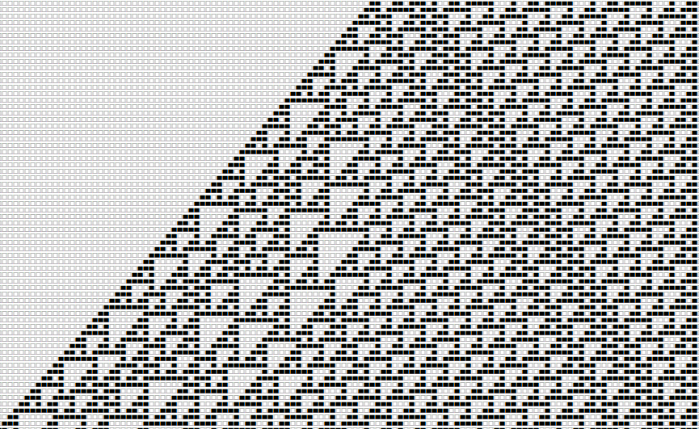

Quick learner with IC design experience and flexibility of software thinking.
Possesses expertise in Integrated Circuits and Design Verification, with experience constructing SystemVerilog verification environments.
3 years of leadership experience, excelling in interdisciplinary teamwork and adept at problem-solving.
My Skills
My Work & Projects

Floating Point Multiplier
Designed an IEEE 754 Double-precision Floating Point Multiplier using Verilog.
Completed the Synthesis, APR process and conducted DRC/LVS verification.
Completed the Synthesis, APR process and conducted DRC/LVS verification.

Rule110 Cellular Automaton
Developed a highly modular Rule110, ensuring flexibility and scalability.
Implemented a FSM to control the computational flow and timing.
Implemented a FSM to control the computational flow and timing.

4-bits Arithmetic Logic Unit
Designed and implemented a 4-bit ALU circuit with 16 arithmetic functions.
Wrote SDC file, optimize layout parameters, and passed lint and DRC checks.
Wrote SDC file, optimize layout parameters, and passed lint and DRC checks.

FIR Filter
Implemented a fixed-point FIR filter circuit in an Linear Time-Invariant system.
Combined shift registers, multipliers, and adders to realize high-pass and low-pass filters.
Combined shift registers, multipliers, and adders to realize high-pass and low-pass filters.

HDLBits Verilog Practice
Practiced a total of 182 Verilog exercises on the HDLBits website.
Continuously improved circuit design skills and shared my practice results on GitHub.
Continuously improved circuit design skills and shared my practice results on GitHub.

FPGA Block-pushing Game
Developed a simplified block-pushing game using FPGA(Altera DE2-70).
A demonstration video showcasing the actual gameplay is available on YouTube.
A demonstration video showcasing the actual gameplay is available on YouTube.